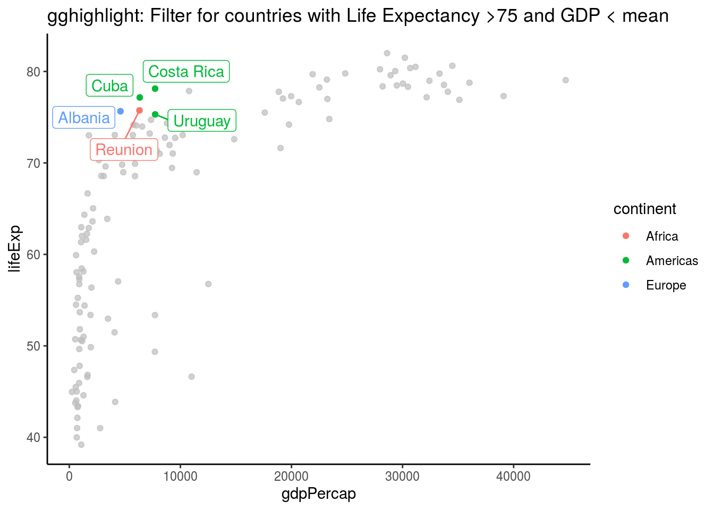

Chapter 6 Plotting
6.1 GGHighlight Example
Plotting with gghighlight is pretty awesome allowing you to filter on any variable. It seems that gghighlight overwrites any ‘colour’ variable you put in the main aes. To get round this and have labels, save as a plot and add geom_label_repel separately.
library(gghighlight)
library(ggrepel)
mydata=gapminder
plot = mydata %>%
filter(year == "2002") %>%
ggplot(aes(x = gdpPercap, y = lifeExp, colour=continent)) +
geom_point()+
gghighlight(lifeExp > 75 & gdpPercap < mean(gdpPercap), label_key = country, use_direct_label = FALSE)+
theme_classic()+
labs(title= "gghighlight: Filter for countries with Life Expectancy >75 and GDP < mean" )
plot + geom_label_repel(aes(label= country), show.legend = FALSE) #only needed if you use use_direct_label = FALSE. This allows you to have a colour legend as well. 
Xie, Yihui. 2015. Dynamic Documents with R and Knitr. 2nd ed. Boca Raton, Florida: Chapman; Hall/CRC. http://yihui.name/knitr/.
———. 2019. Bookdown: Authoring Books and Technical Documents with R Markdown. https://CRAN.R-project.org/package=bookdown.